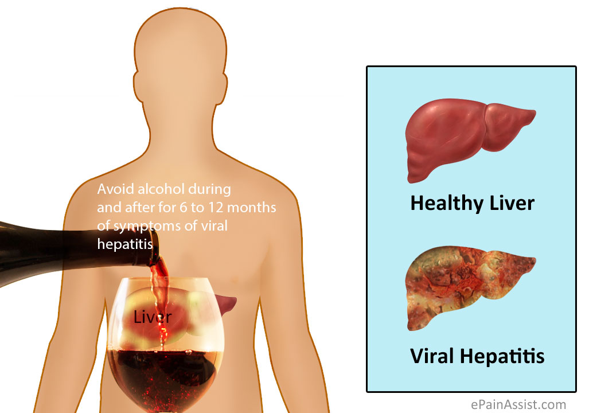

Viral hepatitis

Viral hepatitis is liver inflammation due to a viral infection. It may present in acute (recent infection,
relatively rapid onset) or chronic forms. The most common causes of viral hepatitis are the five unrelated hepatotropic
viruses hepatitis A, hepatitis B, hepatitis C, hepatitis D, and hepatitis E. In addition to the nominal hepatitis viruses,
other viruses that can also cause liver inflammation include cytomegalovirus, Epstein–Barr virus, and yellow fever.
What are the Causes of hepatitis?
- The three most common types of viral hepatitis are all caused by viral infections.
- Hepatitis A is caused by consuming food or water infected with the hepatitis A virus (HAV), often while traveling abroad. The virus can also be transmitted through anal-oral contact during sex or by injecting drugs.
- Hepatitis B is caused by the hepatitis B virus (HBV) and is spread through contact with infected blood, semen, and some other body fluids. It can be a sexually transmitted disease (STD).
- Hepatitis C mostly results from percutaneous infection, occurring when the HCV virus gets under the skin. It is usually spread through injected narcotics, needle-stick injuries, and a lack of infection control in healthcare settings.
What are the symptoms of hepatitis?
The following may occur:
- hives
- itchy skin
- dark urine
- light-colored feces
- yellow skin, whites of the eyes, and tongue
What is the Diagnosis?
- As the symptoms of the different types of hepatitis are similar, the type and severity of hepatitis may only be diagnosed through laboratory tests.
- A doctor will perform a physical examination and ask for a medical history to assess whether a patient has been exposed to a likely cause of hepatitis.
- If hepatitis is suspected, the following tests can confirm a diagnosis:
- Blood tests: These can detect whether the body is producing antibodies to fight the disease, and they can assess liver function by checking the levels of certain liver proteins and enzymes.
- Nucleic acid tests:For hepatitis B and C, an HBV DNA or HCV RNA test can confirm the speed at which the virus is reproducing in the liver, and this will show how active the disease is.
- A liver biopsy:This can measure the extent of liver damage and the possibility of cancer.
- Paracentesis:Abdominal fluid is extracted and tested, to identify the cause of fluid accumulation.
- Elastography:This measures the liver's stiffness by emitting sound waves.
- Surrogate markers:A type of blood test to assess the development of cirrhosis and fibrosis.